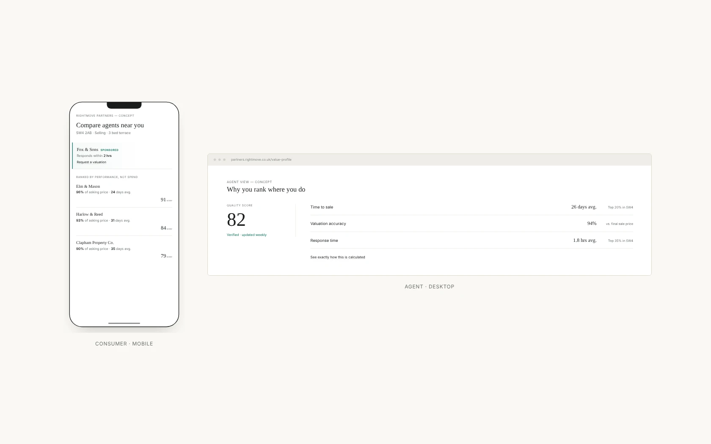
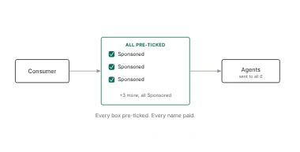
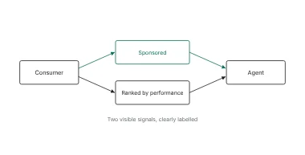
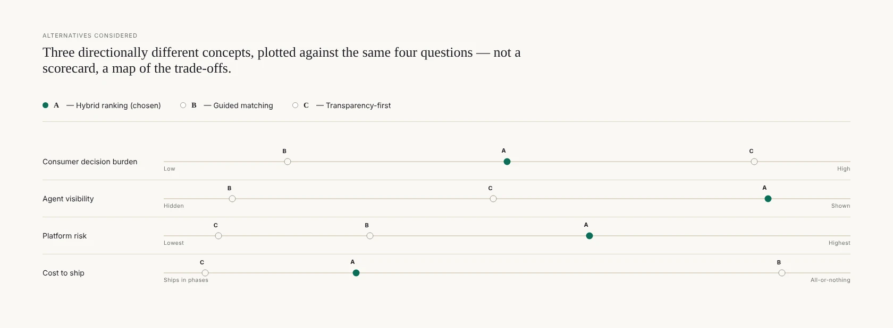
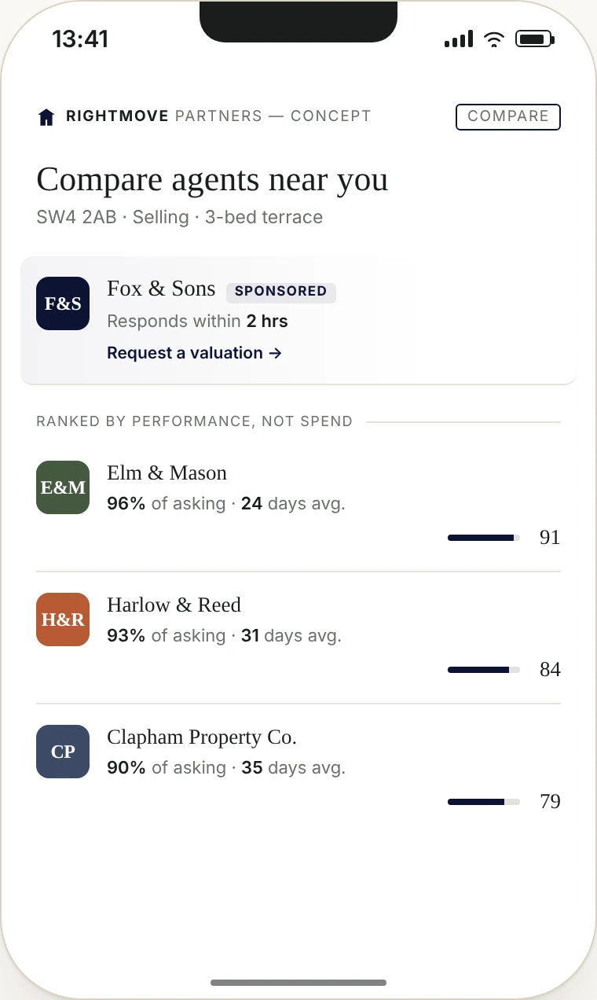
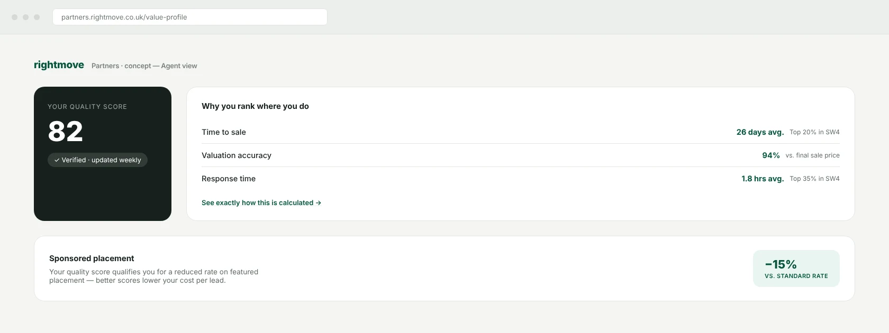

Designed a trust layer for how Rightmove matches agents with consumers
A self-directed concept — replacing black-box agent assignment and pay-to-win visibility with a transparent, two-sided ranking system, without breaking the business model underneath it.

Summary
Rightmove's agent-valuation flow promises “your chosen agent”, then never lets you choose. I used that gap to explore what a Lead role on Rightmove's Partners domain actually requires.
Role: self-directed, solo. Based on Rightmove's public pages — no internal data, no claim that this is what Rightmove is building.
The Problem


Neither side gets a real trust mechanism — precisely the gap the job description names: “helping consumers feel more confident when choosing an estate agent, while helping agents demonstrate the value they offer.”
Alternatives Considered
Two genuinely different directions, not variations on one idea — so the choice would be a real trade-off.

I chose the hybrid ranking — not because it scored best on every axis, but because it's the only one of the three that ships in phases and can be validated at low risk. Transparency-first's best property got folded in anyway: the Quality Score's methodology is published and queryable by agents.
The Approach
Paid decides where you're seen. It shouldn't decide why you're trusted — so the fix ships in phases, not one release.
Concept
Compare agents near you — the consumer side
The craft problem: make Sponsored feel honest, not deceptive, without losing its commercial pull.

Why you rank where you do — the agent side
A two-sided redesign that only shows the consumer screen hasn't solved the two-sided problem.

Leading This
What I'd put on the table with the team before anyone built anything:
Reflection
This is a concept, not a validated design. The problem is real; the solution hasn't been in front of a single consumer or agent.
- Usability-test Compare Agents against the current black-box flow, on completion rate, not preference
- Validate the Quality Score formula against real agent performance before trusting it to rank anyone
- Pressure-test the pricing model with the team that owns Premium Listing revenue
- Check whether “performance over reviews” holds once agents optimise for the metric itself
Why this belongs in the portfolio
Every other case study here is proof of execution on a real team. This one is proof of something else: given a problem I don't have internal access to, can I diagnose it accurately, generate real alternatives, and argue for a direction while being honest about where it could still go wrong.
Keep exploring